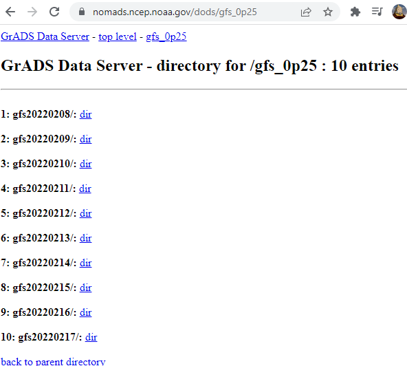
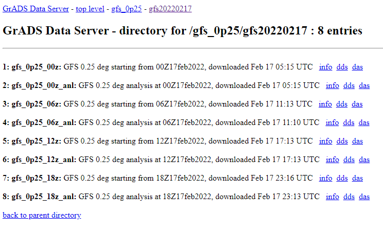

Downloading GFS Forecasts
NOAA weather forecasts are downloaded from the NOMADS dataserver at a 0.25 degree resolution and saved locally in a netcdf file format (see Unidata netcdf API for netcdf file format information) to save computation time and have the ability to run trajectories offline.
Forecasts are available in 6 hour increments (starting with 00 UTC) and typically have a 4 hour upload delay. From the current date, forecasts can be downloaded up to 10 days in the past, and each forecast predicts up to 384 hours (16 days) in the future.
As an example, when visiting the server on February 17, 2022, the following options were available:
The after selecting option 10, gfs20220217, which is the most recent forecast the following options were avilable:
Clicking on info for a particular forecast (ex. gfs_0p25_00z) will show the available variables for download
Note
Besides forecasts, analysis model runs are also available (files ending in “_anl”), although it is recommended to use forecasts for EarthSHAB. To learn more about the differences between forecast and analysis runs see https://rda.ucar.edu/datasets/ds083.2/docs/Analysis.pdf.
Saving GFS Forecasts
saveNETCDF.py downloads the data from the server and saves them to a .nc file to use in EarthSHAB. By saving the file for offline use, running batch simulations is exponentially faster than having to re-download the same forecast from the server for every simulation run.
The following parameters need to be adjusted in the configuration file before saving a netcdf forecast.
gfs: the start time of the gfs forecast downloaded from the server (These are in the form of gfs20231008/gfs_0p25_00z). Start times ares in 6 hour intervals and typically are tpically delayed about 8-12 hours before being uploaded to the server. The server only stores the past 10 days of forecasts.start_time: the start time of the simulationlat_range: How many 0.25 degree indicies to download cenetered aroudn thestart_coordlon_range: How many 0.25 degree indicies to download cenetered aroudn thestart_coorddownload_days: How many days of data to download from the server, can be a maximum of 10 (limited by the server). Data from GFS is downloaded in 3 hour increments unlike ERA5 reanlayis forecasts which are in hourly increments.start_coord